As we know, there are 3 modes of task, new, merge, and overlay. Both new and overlay are well understood. New is file create and generate when the file does not exist, overlay is The file content are overwritten when the file already exist. and merge are some rules need to be followed.
There are 2 types of merge. One is the file merge, the other is Java file merge, and Java file merge is a special case of the file merge.
Any text type file can be merged in 2 ways:
Flow:
template: insert_start id="..." <insert id="..."> ..(2).. or ..(2).. insert_end </insert> file(the same id part)： //insert_start id="..." ..(1).. //insert_end merge result: //insert_start id="..." ..(1).. ..(2).. //insert_end
We can add some annotation symbols to avoid syntax errors before mark symbol
For example, in Java, we can use // or //TODO.
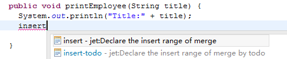
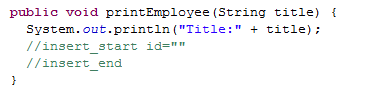
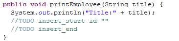
In other file, such as xml or html, jsp, etc. you can use <!-- -->.
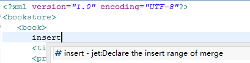
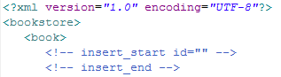
Example: insert a new link in the menu bar.
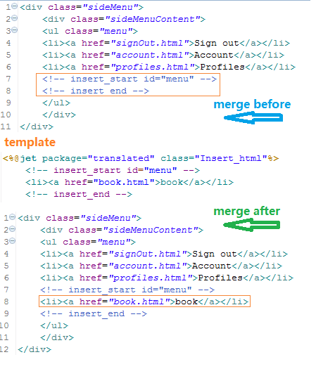
In the template, you can also use <insert>, the effect is the same.
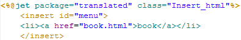
More case, please read:
Flow:
template: update_start id="..." <update id="..."> ..(2).. or ..(2).. update_end </update> file(the same id part)： //update_start id="..." ..(1).. //update_end merge result: //update_start id="..." ..(2).. //update_end
We can add some annotation symbols to avoid syntax errors before mark symbol
For example, in Java, we can use // or //TODO.
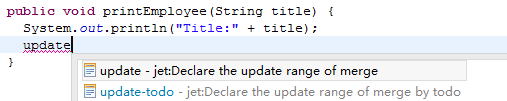
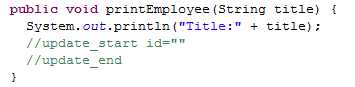
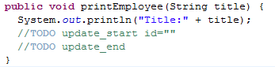
In other file, such as xml or html, jsp, etc. you can use <!-- -->.
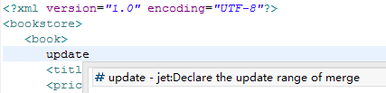
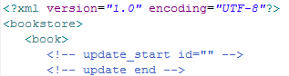
Example: update a new link in the menu bar.
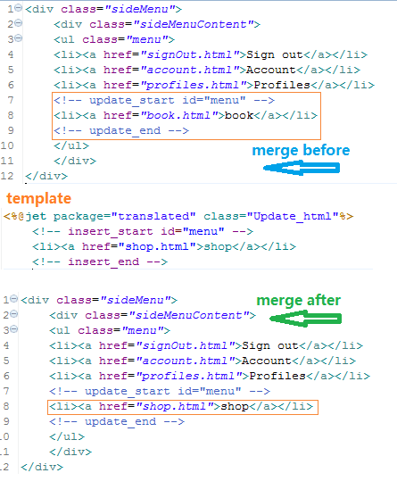
In the template, you can also use <update>, the effect is the same.
Java merge by using @tag in multiline annotations. At the same time, the method body can also use the insert and update merge, and there are 2 kinds of merge.
@create: In the template, there are new field, constructor, method, added to the Java class.
@merge: The class, field, constructor, method that is changed in the template is updated synchronously into the Java class.
The structure of the Java class:
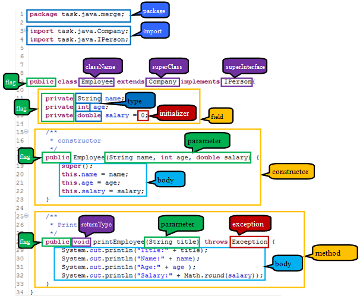
@create：add all include field, constructor, method.
@create include{}: Only the included structure will be added.
@create exclude{}: Contrary to include, only the excluded structure will not be added.
How to get tip.
In the multiline annotation of the class, enter @ can get tip.
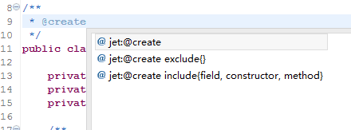
In @create include{} can get tip.
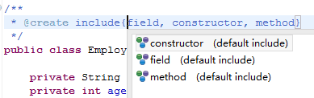
In @create exclude{} can get tip.
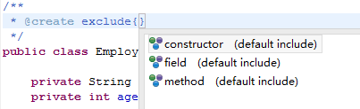
@create example: you can see, all structures have been added.
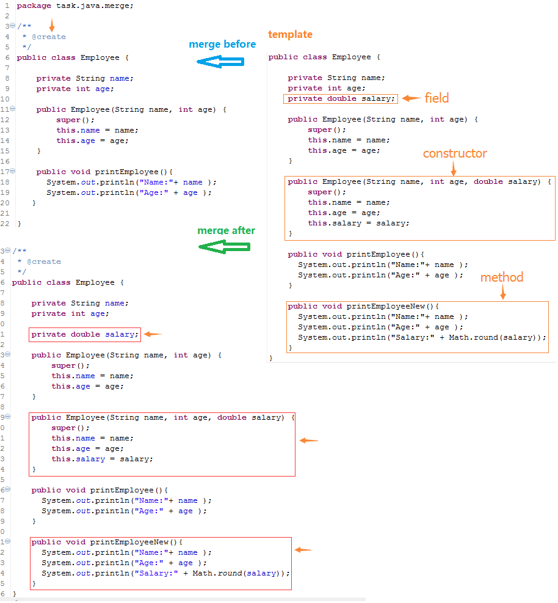
@create include{} example: you can see, only the field is added.
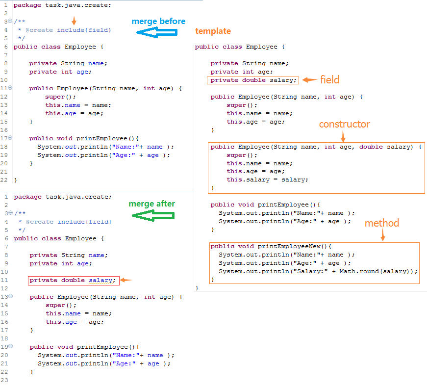
@create exclude{} example: you can see, only the field is not added.
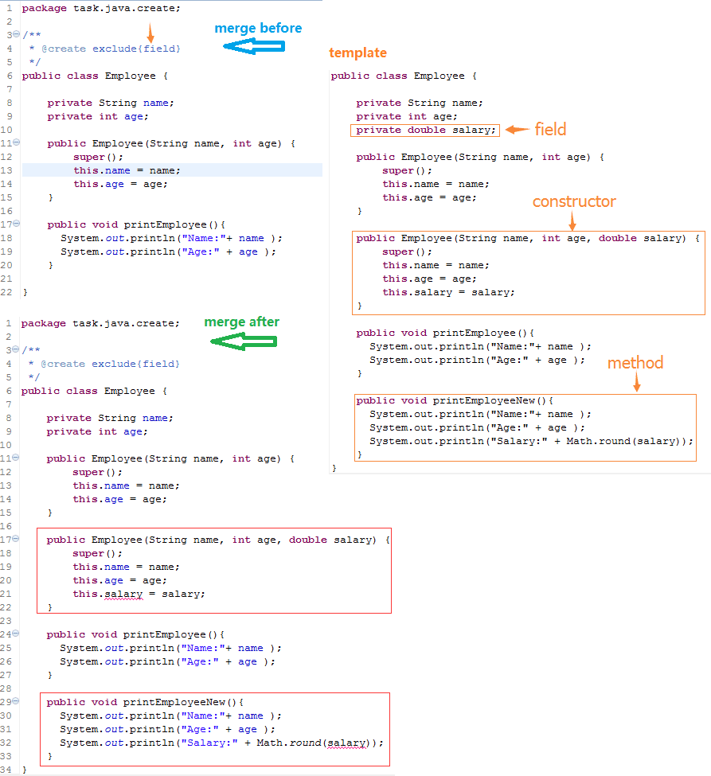
@merge: add all include class, field, constructor, method.
@merge include{}： Only the included structure will be merged.
@merge exclude{}: Contrary to include, only the excluded structure will not be merged.
Class merge structure: package、import、flag、className、superClass、superInterface。
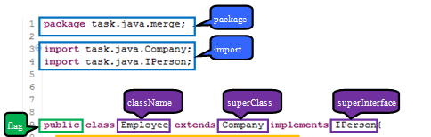
Field merge structure: flag, type, initializer。
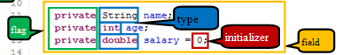
Constructor merge structure: flag、parameter、exception、body。
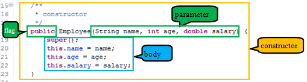
Method merge structure: flag、returnType、parameter、exception、body。
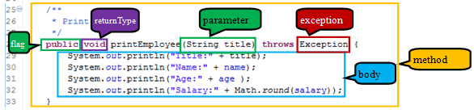
How to get tip.
In the multiline annotation of the class, field, constructor, method enter @ can get tip.
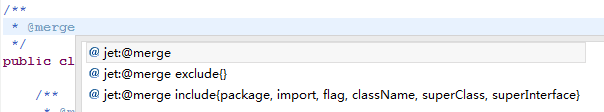
In @create include{} can get tip, each structure is different.
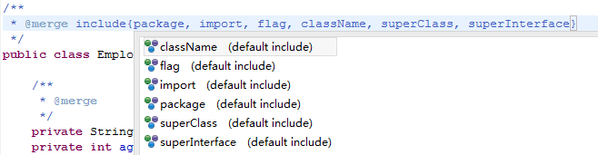
In @create exclude{} can get tip, each structure is different.
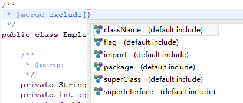
@merge example: you can see, all structures have been merged.
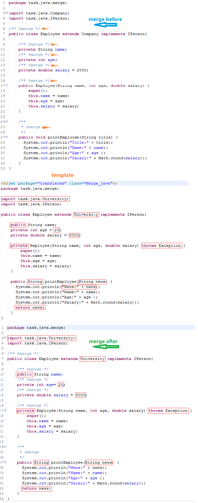
@merge include{}example: flag, parameter, exception, returnType, body are changed in the template. but only parameter, expection, body are merged，flag and exception do not be merged.
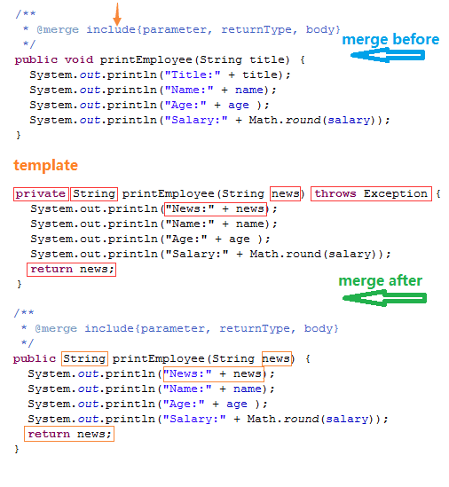
@merge exclude{} example: flag, parameter, exception, returnType, body are
changed in the template.
but only flag and exception are merged, parameter, expection, body
do not be merged.
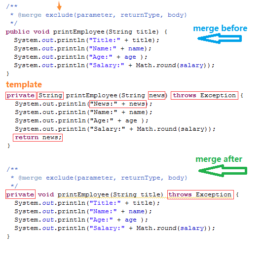
In the method and construction body, you can also use the insert and update.
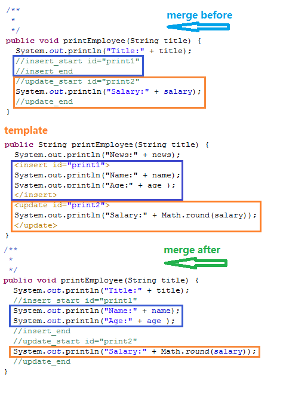
If there is @merge in the annotation of the method, The method body will be merged, however, if there is insert merge or update merge, the merge of body will be invalid.
But better advice is that if you want to use both @merge and insert merge or update merge in the body of the method, you'd better write @merge exclude{body}.